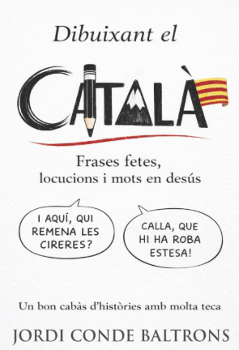
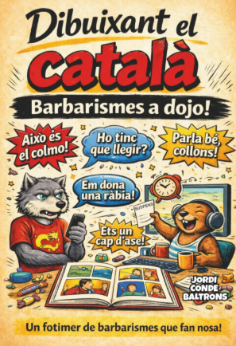
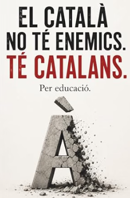
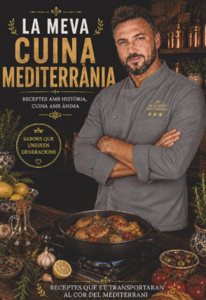
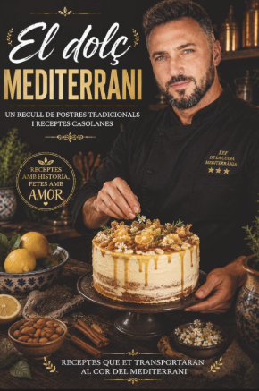

Dibuixant el català. Frases fetes, locucions i mots en desús
Especialment adequat per a estudiants de català dels nivells B2, C1 i C2.
Veure el llibre a AmazonUna manera divertida de descobrir la riquesa del català a través de les il·lustracions, les expressions i els jocs de paraules.

Especialment adequat per a estudiants de català dels nivells B2, C1 i C2.
Veure el llibre a Amazon

Una lectura molt recomanada per entendre per què el català retrocedeix i reflexionar sobre el paper que hi tenim els mateixos catalans.
Veure el llibre a AmazonPerquè, a més de les lletres, la cuina és una de les meves grans passions.

Receptes amb història, cuina amb ànima.
Veure el llibre a Amazon
Un recull de postres tradicionals i receptes casolanes de la cuina mediterrània.
Veure el llibre a Amazon